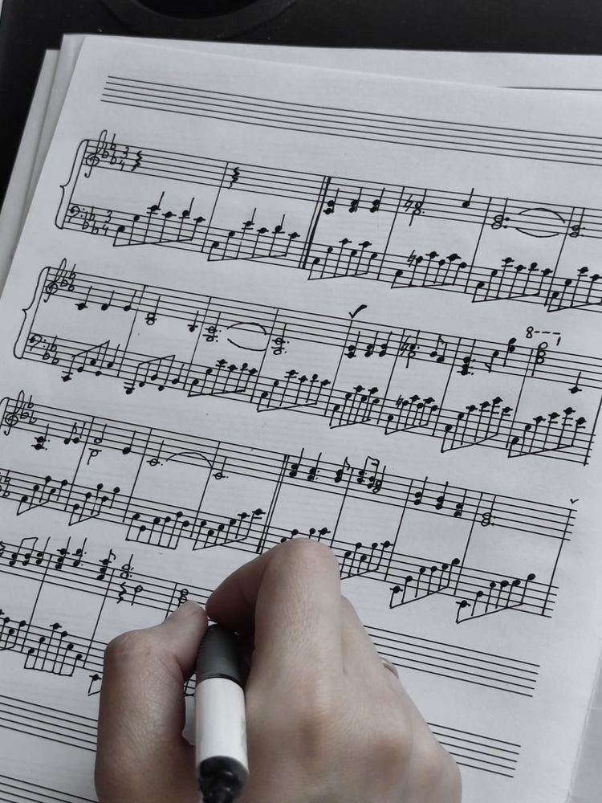
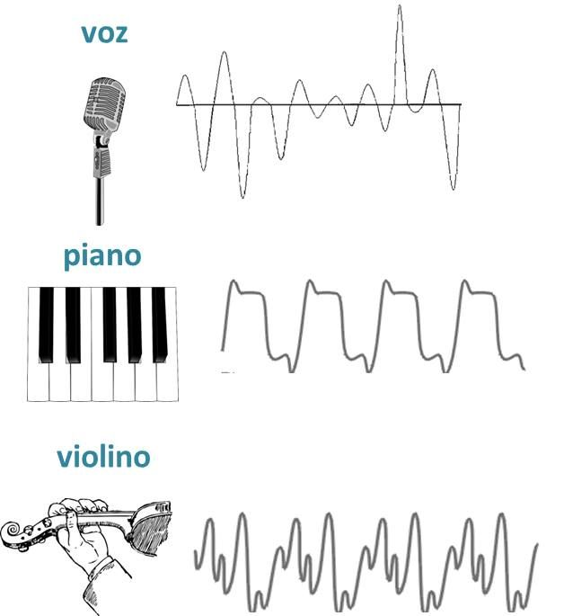
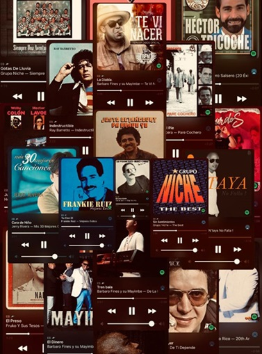
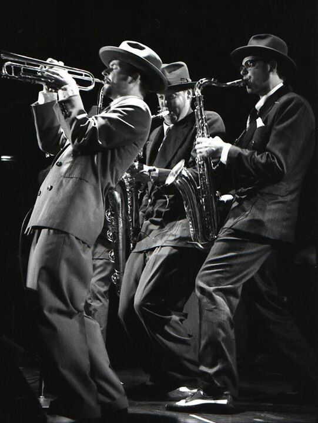
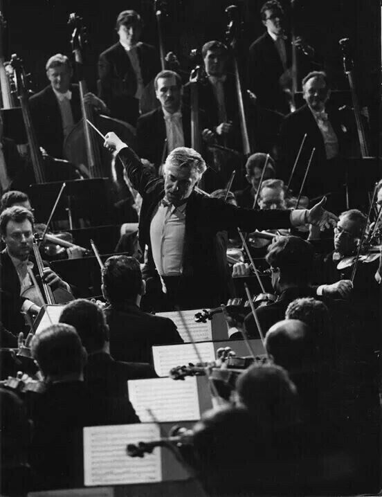

La música mueve el mundo
La música es una forma de expresión universal que acompaña a las personas en su vida diaria. Nos permite sentir emociones y conectar con otros.
Desde tiempos antiguos ha estado presente en rituales, cultura y entretenimiento.
¿Qué es la música?
Además, la música se estudia en disciplinas como la musicología, la teoría musical y la composición. También se relaciona con la psicología, ya que puede influir en nuestro estado de ánimo y bienestar.
Características
Ritmo: Marca el tiempo de la música y nos invita a movernos.
Melodía: Es la parte que podemos cantar y recordar fácilmente.

Armonía: Acompaña la melodía y le da profundidad.

Timbre: Diferencia los sonidos de cada instrumento o voz.
Estas características se combinan para crear piezas únicas que transmiten emociones. Cada género musical utiliza estas cualidades de manera distinta, generando diversidad sonora.
Géneros musicales
Pop: Popular y pegajoso, con melodías fáciles de recordar.
Rock: Energía, guitarras eléctricas y letras intensas.
Reggaetón: Ritmos urbanos y letras que invitan a bailar.
Electrónica: Beats repetitivos y atmósferas digitales.
Cumbia: Ritmos tropicales y bailables muy populares en Latinoamérica.

Salsa: Música alegre con mucho ritmo y perfecta para bailar en pareja.
Bachata: Estilo romántico con guitarras suaves y letras de amor.
Hip Hop: Ritmos urbanos con rap y expresión cultural.

Jazz: Género sofisticado con improvisación y sonidos elegantes.

Clásica: Música instrumental con gran riqueza artística e histórica.
Existen cientos de géneros musicales más. Cada uno refleja una cultura, una época y un estilo de vida diferente.
Opinión
En mi opinión, la música es un lenguaje universal que une a las personas sin importar su idioma o cultura. Es capaz de transmitir mensajes poderosos y generar cambios sociales.